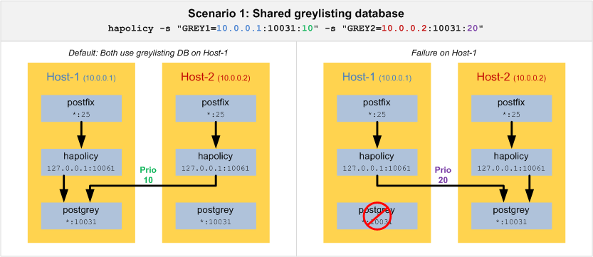
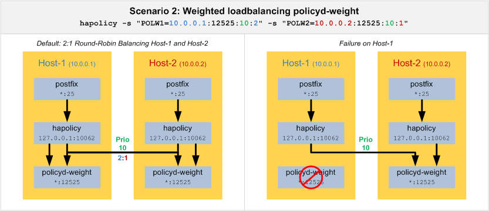

hapolicy - policy delegation high availability script
hapolicy [OPTIONS] --service=SERVICE1 [--service=SERVICE2 ...]
Services:
-s, --service <name>=<address>:<port>[:<prio>:<weight>:<timeout>]
Options:
-d, --default <action> returns <action> if no service was available (default: 'dunno')
-l, --logging log requests
-v, --verbose increase logging verbosity
-L, --stdout log to stdout, for debugging, do NOT use with postfix
hapolicy enables high availability, weighted loadbalancing and a fallback action for postfix policy delegation services. Invoked via postfix spawn it acts as a wrapper that queries other policy servers via tcp connection. The order of the service queries can be influenced by assigning a specific priority and weight to each service. A service is considered 'failing', if the connection is refused or the specified service timeout is reached. If all of the configured policy services were failing, hapolicy returns a default action (e.g. dunno) to postfix.
With version 1.00 hapolicy has less than 200 lines of perl code using only standard perl modules. It does not require any disk access nor configuration files and runs under an unpriviledged user account. This should allow fast and reliable operation.
A service has the following attributes
"servicename" => {
ip => '127.0.0.1', # ip address
port => '10040', # tcp port
prio => '10', # optional, lower wins
weight => '1', # optional, for items with same prio (weighted round-robin), higher is better
timeout => '30', # optional, query timeout in seconds
},
You may define multiple services at the command line. Which means that
hapolicy -s "grey1=10.0.0.1:10031:10" -s "grey2=10.0.0.2:10031:20"
will always try first service grey1 at ip 10.0.0.1 port 10031 and if that service is not available or
does not answer within the default of 30 seconds the next service grey2 at ip 10.0.0.2 port 10031 will
be queried.

If you want to load balance connections you may define
hapolicy -s "polw1=10.0.0.1:12525:10:2" -s "polw2=10.0.0.2:12525:10:1"
which queries service polw1 at ip 10.0.0.1 twice as much as service polw2 at ip 10.0.0.2.

Note that this
setup also ensures high availability for both services. If polw1 is not available or does not answer
within the default of 30 seconds polw2 will be queried and vice versa. There is no reason to define a service twice.
Enter the following at the bottom of your postfix master.cf (usually located at /etc/postfix):
# service description, note the leading blanks at the second line
127.0.0.1:10061 inet n n n - 0 spawn
user=nobody argv=/usr/local/bin/hapolicy -l -s GREY1=10.0.0.1:10031:10 -s GREY2=10.0.0.2:10031:10
save the file and open postfix main.cf. Modify it as follows:
127.0.0.1:10061_time_limit = 3600
smtpd_recipient_restrictions =
permit_mynetworks,
... other authed permits ...
reject_unauth_destination,
... other restrictions ...
check_policy_service inet:127.0.0.1:10061 # <- hapolicy query
Now issue 'postfix reload' at the command line. Of course you can have more enhanced setups using postfix restriction classes. Please see LINKS for further options.
[1] Get hapolicy
http://www.postfwd.org/hapolicy/hapolicy
[2] Postfix SMTP Access Policy Delegation
http://www.postfix.org/SMTPD_POLICY_README.html
[3] Postfix Per-Client/User/etc. Access Control
http://www.postfix.org/RESTRICTION_CLASS_README.html
hapolicy is free software and released under BSD license, which basically means that you can do what you want as long as you keep the copyright notice:
Copyright (c) 2008, Jan Peter Kessler All rights reserved.
Redistribution and use in source and binary forms, with or without modification, are permitted provided that the following conditions are met:
* Redistributions of source code must retain the above copyright notice, this list of conditions and the following disclaimer. * Redistributions in binary form must reproduce the above copyright notice, this list of conditions and the following disclaimer in the documentation and/or other materials provided with the distribution. * Neither the name of the authors nor the names of his contributors may be used to endorse or promote products derived from this software without specific prior written permission.
THIS SOFTWARE IS PROVIDED BY ME ``AS IS'' AND ANY EXPRESS OR IMPLIED WARRANTIES, INCLUDING, BUT NOT LIMITED TO, THE IMPLIED WARRANTIES OF MERCHANTABILITY AND FITNESS FOR A PARTICULAR PURPOSE ARE DISCLAIMED. IN NO EVENT SHALL BE LIABLE FOR ANY DIRECT, INDIRECT, INCIDENTAL, SPECIAL, EXEMPLARY, OR CONSEQUENTIAL DAMAGES (INCLUDING, BUT NOT LIMITED TO, PROCUREMENT OF SUBSTITUTE GOODS OR SERVICES; LOSS OF USE, DATA, OR PROFITS; OR BUSINESS INTERRUPTION) HOWEVER CAUSED AND ON ANY THEORY OF LIABILITY, WHETHER IN CONTRACT, STRICT LIABILITY, OR TORT (INCLUDING NEGLIGENCE OR OTHERWISE) ARISING IN ANY WAY OUT OF THE USE OF THIS SOFTWARE, EVEN IF ADVISED OF THE POSSIBILITY OF SUCH DAMAGE.
Jan Peter Kessler <info (AT) postfwd (DOT) org>. Let me know, if you have any suggestions.